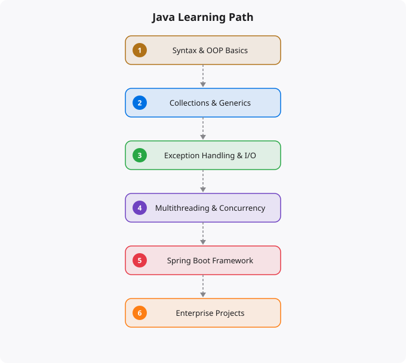

Java has been one of the most important programming languages in the world for nearly three decades, and despite numerous declarations of its decline, it remains absolutely dominant in enterprise software development, Android applications, and large-scale backend systems. The language that runs banking systems, e-commerce platforms, healthcare software, and a significant portion of the world's financial infrastructure is Java. For developers targeting enterprise careers, Android development, or large-scale backend engineering, Java proficiency is fundamental.
Java's longevity is not inertia — it is engineering quality. The Java Virtual Machine (JVM) is one of the most sophisticated runtime environments ever built, offering excellent performance, powerful garbage collection, and robust tooling. Java's strict type system and object-oriented design enforce code structure that makes large codebases maintainable across large teams over long periods. The JVM ecosystem extends far beyond Java — Kotlin, Scala, Clojure, and Groovy all run on the JVM and interoperate with Java code. The vast ecosystem of Java libraries and frameworks — Spring, Hibernate, Maven, Gradle — provides mature, well-tested solutions for virtually any enterprise problem. And billions of Android devices run Java or Kotlin code on the Android runtime.
Java is a strongly typed, object-oriented language. Every variable has a declared type, and that type is checked at compile time — before your program runs. This is different from Python and JavaScript, which check types at runtime. The type safety catches an entire category of errors early and makes IDEs significantly more helpful — autocomplete, refactoring tools, and code navigation are much more powerful in statically typed languages. Primitive types: int, long, double, float, char, boolean, and byte. Object types: String, Integer, ArrayList, HashMap, and any class you or a library defines. The difference between primitives (stored by value) and objects (stored by reference) is fundamental to understanding Java's behavior. Object-oriented programming is central to Java in a way that is not true of Python or JavaScript. Classes, objects, constructors, methods, fields, access modifiers (public, private, protected), and the four pillars of OOP — encapsulation, inheritance, polymorphism, and abstraction — are not optional topics in Java; they are the primary organizational structure of the language. Exception handling with try-catch-finally: Java requires you to handle or declare checked exceptions, which is stricter than Python or JavaScript. Understanding the exception hierarchy, checked versus unchecked exceptions, and proper exception handling patterns is essential.
The Java Collections Framework provides the essential data structures: List (ArrayList, LinkedList), Set (HashSet, TreeSet), Map (HashMap, TreeMap), and Queue. Understanding the performance characteristics of each collection — why HashMap lookups are O(1) while TreeMap lookups are O(log n), when LinkedList is better than ArrayList — is practical knowledge that affects real program performance. Generics allow you to write type-safe data structures and algorithms that work with any type. Understanding how to use generic types effectively is essential for reading most modern Java code. Java Streams (introduced in Java 8) bring functional programming patterns to Java — filter, map, reduce, collect — for elegant, readable data processing that replaces verbose loops. Multithreading and concurrency: Java has first-class support for multithreading, and understanding threads, the synchronized keyword, thread safety, and the java.util.concurrent package is important for any performance-critical Java development. I/O: reading and writing files, working with streams, serialization, and the NIO package for non-blocking I/O.
Spring is the dominant framework for enterprise Java development. Spring Boot specifically has become the standard way to build Java microservices and REST APIs — it dramatically simplifies configuration and reduces boilerplate. Spring MVC for building web controllers and REST APIs, Spring Data JPA for database access with Hibernate ORM, Spring Security for authentication and authorization, and Spring's dependency injection container for managing application components are the core components of the Spring ecosystem. Understanding dependency injection — how Spring manages object creation and wiring — is the foundational concept for working with Spring effectively. Maven and Gradle for build management and dependency resolution. Familiarity with both is valuable, though Gradle has become increasingly preferred for new projects. Testing with JUnit 5, Mockito for mocking dependencies, and Spring Boot Test for integration testing. Database access patterns: JDBC directly, JPA/Hibernate for ORM, and the trade-offs between the two approaches for different use cases.
Kotlin is worth mentioning alongside Java because it has become the preferred language for Android development (it is now Google's recommended language for Android) and is increasingly used for server-side development as well. Kotlin is fully interoperable with Java — Kotlin code can use Java libraries directly and vice versa. Its syntax is more concise than Java, it has better null safety, and it supports functional programming patterns more naturally. If you are learning Java for Android development, strongly consider learning Kotlin alongside it. If you are learning Java for server-side enterprise development, Java remains more common in existing codebases, but Kotlin's adoption is growing. Either way, the concepts covered in learning Java — OOP, JVM, Spring, data structures — transfer directly to Kotlin development.
← Back to BlogJava is a statically typed, class-based object-oriented language. Every variable has a declared type that cannot change, and the compiler enforces type correctness before the program runs. This catches entire categories of bugs at compile time rather than at runtime. Java's eight primitive types (int, long, double, float, boolean, char, byte, short) store values directly. Everything else is an object — an instance of a class stored on the heap, referenced by a variable that holds the memory address. Understanding the difference between primitives and reference types explains Java behaviors like why comparing strings with == often gives unexpected results (it compares references, not content — use .equals() for content comparison).
Java's object-oriented design is built on four principles. Encapsulation — hiding internal state behind a public interface using access modifiers (private, protected, public) and getters/setters. Inheritance — building class hierarchies where subclasses inherit fields and methods from parent classes using extends. Polymorphism — the ability to treat objects of different classes through a common interface, enabling flexible and extensible code. Abstraction — defining contracts through abstract classes and interfaces without specifying implementation, allowing different implementations to be substituted. Java interfaces, particularly since Java 8 added default methods, are one of the most powerful tools for designing flexible, testable code.
Java's relevance in the modern tech landscape remains strong despite competition from newer languages. Spring Boot has made Java web development as productive as any other framework, and Spring's ecosystem is one of the most comprehensive for enterprise application development. Android app development uses Kotlin (which runs on the JVM and is fully interoperable with Java). Big data processing with Apache Kafka, Apache Spark, and Hadoop is heavily Java/JVM based. Java's performance — thanks to decades of JVM optimization — makes it competitive with systems languages for compute-intensive workloads. The massive existing Java codebase in enterprise environments ensures continued demand for Java developers. For anyone targeting enterprise backend development, fintech, or Android, Java remains an excellent investment.
Start with language fundamentals: syntax, control flow, data types, and methods. Then deeply learn object-oriented design — not just syntax but when and how to apply the OOP principles. Study collections (ArrayList, HashMap, HashSet) and the Java Collections Framework. Learn exception handling properly. Study generics for type-safe code reuse. Master functional programming features added in Java 8: lambda expressions, streams, and Optional. Learn the Spring Framework for web development. Practice with real projects: a REST API, a command-line utility, a data processing program. The path from beginner to productive Java developer typically takes six to twelve months of consistent practice.
Disclaimer: This article is for educational purposes only. Java implementations, performance characteristics, and security considerations vary by environment and use case. Always follow official documentation and best practices before deploying Java-based systems.